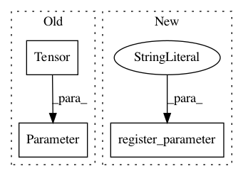

dc57735f16c54a794bab7b794618ac33b4e4f2fe,mmdet/ops/dcn/modules/deform_conv.py,ModulatedDeformConv,__init__,#ModulatedDeformConv#Any#Any#Any#Any#Any#Any#Any#Any#,50
Before Change
if bias:
self.bias = nn.Parameter(torch.Tensor(out_channels))
else:
self.bias = nn.Parameter(torch.Tensor([0])) // fake tensor
self.reset_parameters()
def reset_parameters(self):
After Change
if bias:
self.bias = nn.Parameter(torch.Tensor(out_channels))
else:
self.register_parameter("bias", None)
self.reset_parameters()
def reset_parameters(self):
n = self.in_channels
In pattern: SUPERPATTERN
Frequency: 3
Non-data size: 3
Instances
Project Name: open-mmlab/mmdetection
Commit Name: dc57735f16c54a794bab7b794618ac33b4e4f2fe
Time: 2019-01-21
Author: yhcao6@gmail.com
File Name: mmdet/ops/dcn/modules/deform_conv.py
Class Name: ModulatedDeformConv
Method Name: __init__
Project Name: rusty1s/pytorch_geometric
Commit Name: 32ff7c467adc7b8252cf2fa94d9616050d7ff62c
Time: 2020-12-14
Author: matthias.fey@tu-dortmund.de
File Name: torch_geometric/nn/conv/transformer_conv.py
Class Name: TransformerConv
Method Name: __init__
Project Name: rusty1s/pytorch_geometric
Commit Name: e60669c5aa467d5c11a508c01b37c4ed8e352fa6
Time: 2021-02-15
Author: matthias.fey@tu-dortmund.de
File Name: torch_geometric/nn/conv/supergat_conv.py
Class Name: SuperGATConv
Method Name: __init__